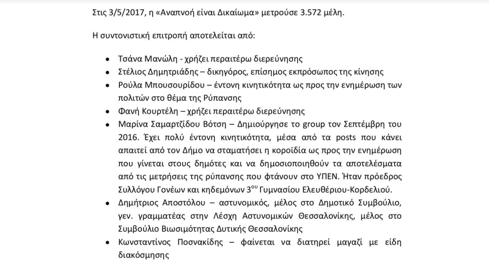
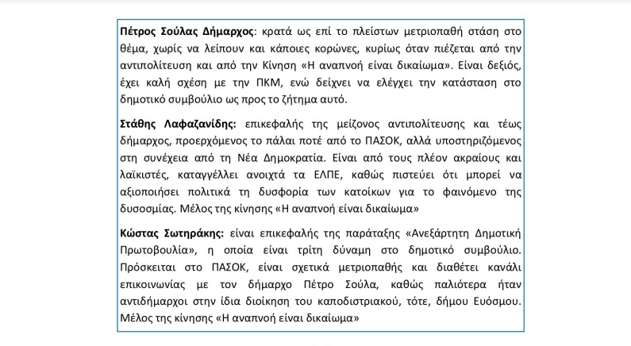
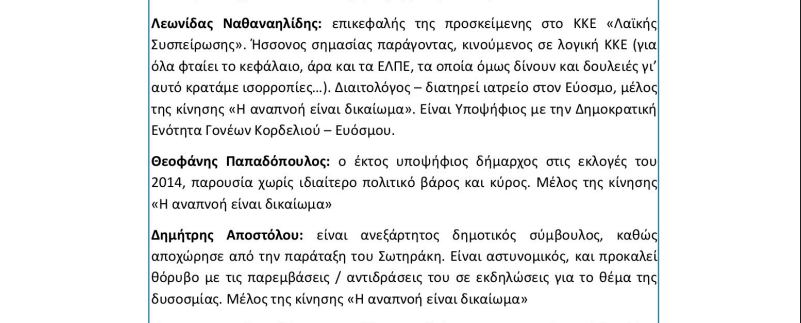
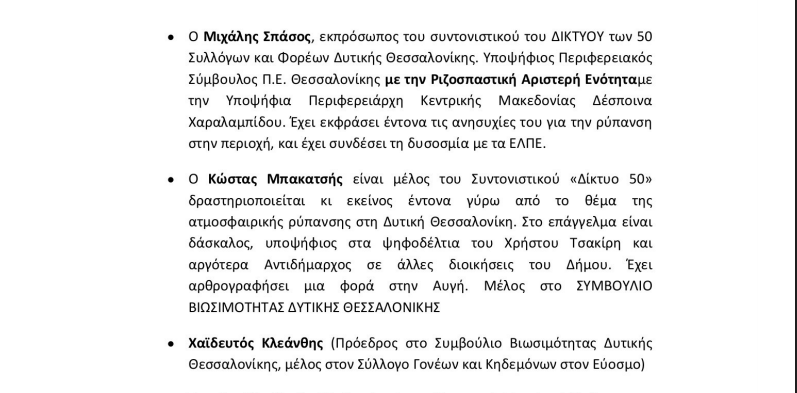

Μία τυχαία αναζήτηση στο διαδίκτυο οδήγησε στην αποκάλυψη μίας πρωτοφανούς υπόθεση φακελώματος πολιτών, πολιτικών και οργανώσεων που έγινε τους τελευταίους μήνες στη Θεσσαλονίκη για λογαριασμό της εταιρείας Ελληνικά Πετρέλαια.
Το έγγραφο 105 σελίδων, με τίτλο “Δυσοσμία στην Δυτική Θεσσαλονίκη – Καταγραφή υπάρχουσας κατάστασης” φέρει ημερομηνία “Μάιος 7, 2017” καθώς επίσης τα λογότυπα των ΕΛΠΕ και της εταιρείας παροχής υπηρεσιών επικοινωνίας One Team.
Όπως προδίδει ο τίτλος του, το έγγραφο αναφέρεται στο γνωστό πρόβλημα δυσοσμίας που παρατηρείται στη δυτική Θεσσαλονίκη, με διαστήματα έντονων εξάρσεων, που απασχολεί ιδιαίτερα την τοπική κοινωνία τα τελευταία χρόνια και έχει γίνει αλλεπάλληλες φορές αιτία καταγγελιών αλλά και έναρξης περιβαλλοντικών και δικαστικών ερευνών.
Το ενδιαφέρον του συντάκτη εστιάζεται στη δημοσιότητα που έχει λάβει το θέμα της δυσοσμίας. Προσπαθεί να παρουσιάσει τις σημαντικότερες δημόσιες αναφορές για τη δυσοσμία και να καταγράψει το σύνολο των ατόμων και των φορέων που ασχολούνται με το πρόβλημα, καταλήγοντας σε φακέλωμα που θυμίζει... αρχεία της Στάζι.
Σε πολυσέλιδα κεφάλαια με χαρακτηριστικούς τίτλους όπως “Χαρτογράφηση αντιδράσεων”, “Χαρτογράφηση δήμου Κορδελιού – Ευόσμου”, “Χαρτογράφηση πολιτικών δυνάμεων”, “Ανθρωπογεωγραφία – Συσχετισμός Δυνάμεων”, ο συντάκτης δεν περιορίζεται στην καταγραφή των αντιδράσεων αλλά προχωρά σε κρίσεις για συγκεκριμένα πρόσωπα, συχνά συνοδευόμενες από απαξιωτικά σχόλια.
Ιδιαίτερη θέση στο φακέλωμα έχει η Ανεξάρτητη Κίνηση Πολιτών “Η αναπνοή είναι δικαίωμα”, για την οποία καταγράφει αναλυτικά στοιχεία των μελών της.

Εξίσου έντονο ενδιαφέρον δείχνει ο συντάκτης για τα μέλη του δημοτικού συμβουλίου του δήμου Κορδελιού – Ευόσμου.


Καταγράφει επίσης αναλυτικά τη δραστηριότητα μελών του “Δικτύου 50” Συλλόγων και Φορέων της Δυτικής Θεσσαλονίκης

Στο φακέλωμα περιλαμβάνονται επίσης η “Κίνηση 130/110 επιχειρηματιών της Δυτικής Θεσσαλονίκης”, ο Σύλλογος Γονέων του 15ου Δημοτικού Σχολείου Ευόσμου και η Ένωση Γονέων & Κηδεμόνων Κορδελιού – Ευόσμου.
Το κείμενο εντόπισε έπειτα από τυχαία αναζήτηση στο διαδίκτυο ο Κλεάνθης Χαϊδευτός, το όνομα του οποίου περιλαμβάνεται στο φακέλωμα. Μαζί με άλλα πρόσωπα και οργανώσεις, που περιλαμβάνονται στο κείμενο, προχώρησε σε καταγγελία στην αστυνομία.
Για την υπόθεση κινητοποιήθηκε επίσης ο δήμος Κορδελιού-Ευόσμου, στον οποίο έχει προγραμματιστεί συνεδρίαση του δημοτικού συμβουλίου την ερχόμενη Τρίτη στις 8.30 το βράδυ για να εξεταστεί το θέμα. Ανακοινώσεις με τις οποίες καταδικάζουν το περιεχόμενο του κειμένου και ζητούν εξηγήσεις από τις εμπλεκόμενες εταιρείες εξέδωσαν επίσης ο ΣΥΡΙΖΑ Θεσσαλονίκης, η οργάνωση Κεντρικής Μακεδονίας του ΚΚΕ και η Λαϊκή Ενότητα Θεσσαλονίκης.
Οι εταιρείες
Η δημοσιότητα που έλαβε το θέμα ανάγκασε τις δύο εταιρείες (ΕΛΠΕ και OneTeam) να προχωρήσουν επίσης σε ανακοινώσεις, επιβεβαιώνοντας την ύπαρξη του εγγράφου, το οποίο όμως φρόντισαν προηγουμένως να αποσύρουν από το διαδίκτυο. (Αντίγραφο του κειμένου που διέσωσαν οι θιγόμενοι είναι διαθέσιμο εδώ)
Ειδικότερα η εταιρεία παροχής υπηρεσιών επικοινωνίας One Team σε ενημερωτικό σημείωμά της (προς το newreport.gr) κάνει λόγο για “διαρροή απόρρητων αρχείων καθώς και υποκλοπή στοιχείων ηλεκτρονικής επικοινωνίας, από φάκελο όπου τηρούνται αρχεία εσωτερικής χρήσης. Μέρος αυτών, που αφορούν στην εταιρεία Ελληνικά Πετρέλαια, δημοσιεύτηκαν – ενδεχομένως παραποιημένα – αιφνιδίως σε blog και ιστοσελίδα”. Η ίδια εταιρεία σπεύδει να προειδοποιήσει όχι μόνο τους υπεύθυνους για τη διαρροή, αλλά και όσους το χρησιμοποιούν! Συγκεκριμένα αναφέρει ότι “η Εταιρία έχει παραγγείλει ειδική έρευνα από αρμόδια υπηρεσία της Δίωξης Ηλεκτρονικού Εγκλήματος και επιφυλάσσεται κάθε νόμιμου δικαιώματος της ενάντια στους φυσικούς και ηθικούς αυτουργούς της ηλεκτρονικής υποκλοπής καθώς και σε αυτούς που χρησιμοποιούν ή/και, παραποιούν τα προϊόντα της εν λόγω υποκλοπής”.
Από την πλευρά τους τα ΕΛΠΕ εμφανίζονται ως θιγόμενα από την όλη υπόθεση. Σε σχετική ανακοίνωση επιρρίπτουν το σύνολο της ευθύνης στην εταιρεία παροχής υπηρεσιών επικοινωνίας και εκφράζουν συγνώμη “στους πολίτες της Θεσσαλονίκης για τις αντιδεοντολογικές αναφορές του κειμένου”.